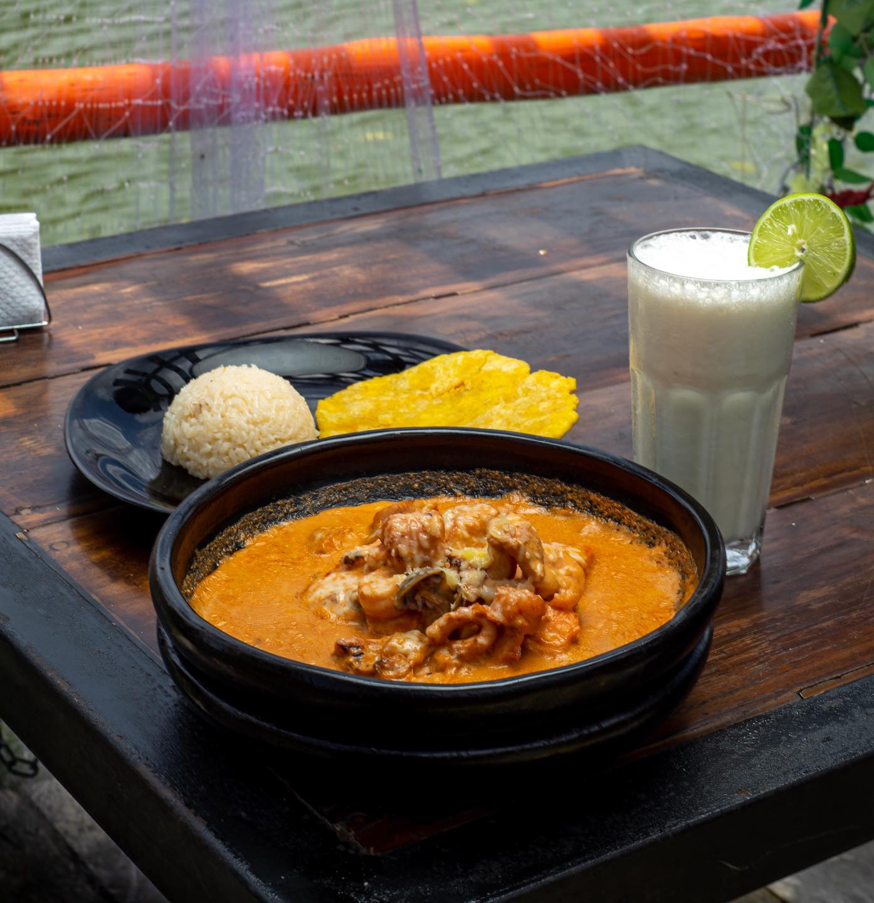
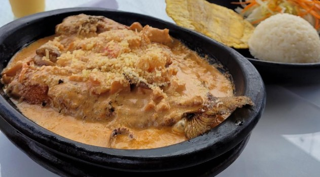
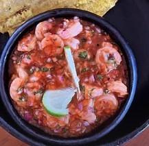
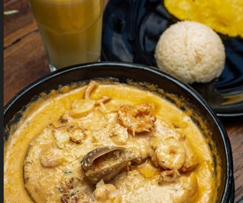
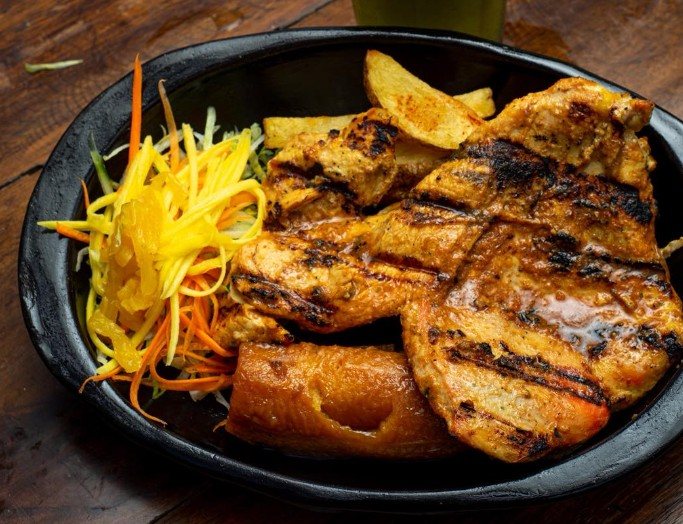
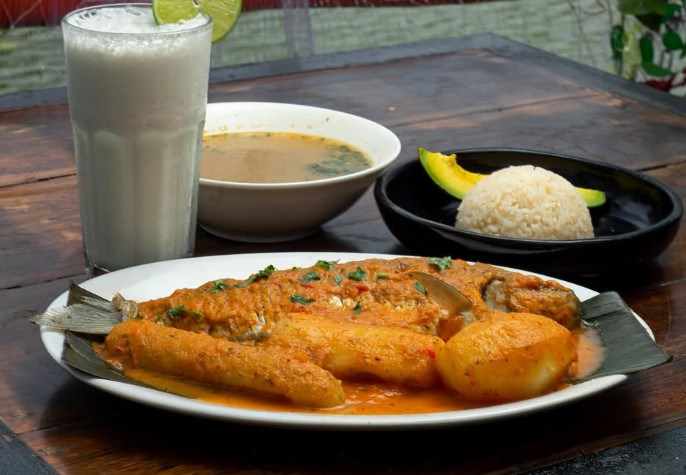
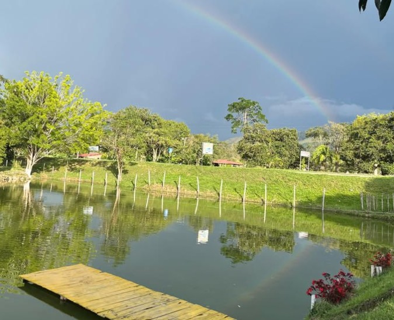
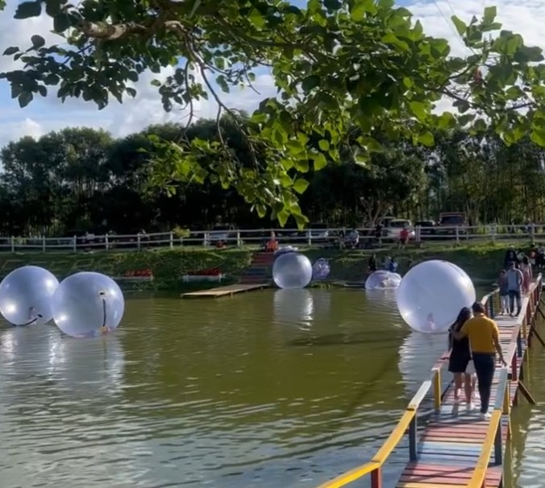
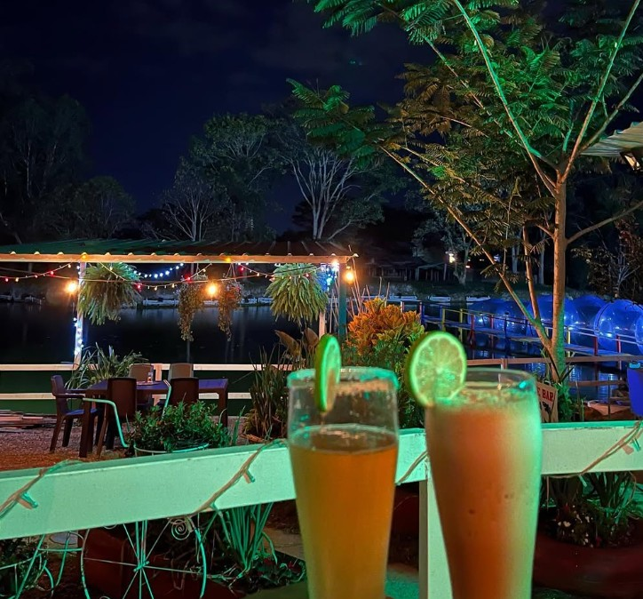
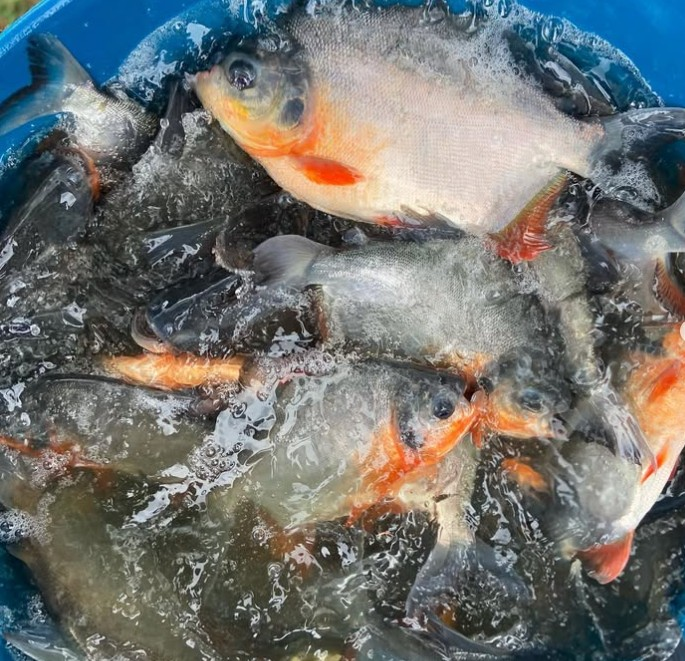

Menú

Cazuela de Mariscos
Patacón y arroz.
$37.000
Bagre en Salsa
Maduro, papa, ensalada y arroz.
$30.000
Ceviche de Camarón
Patacón.
$25.000
Trucha a la Marinera
Arroz, patacón y ensalada.
$45.000
Pechuga a la Parrilla
Arroz, patacón, ensalada y limón.
$40.000
Viudo de Capaz
Papa, yuca, arroz y aguacate.
$35.000Galería

Fuente: Facebook La Pecera

Fuente: Facebook La Pecera

Fuente: Facebook La Pecera

Fuente: Facebook La Pecera